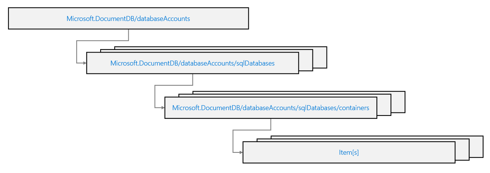

Developer Tools
Using template - Bicep / ARM

https://learn.microsoft.com/en-us/training/modules/create-resource-template-for-azure-cosmos-db-sql-api/7-exercise-create-container-using-azure-resource-manager-templates
az deployment group create --resource-group '<resource-group>' --template-file '.\template.json|bicep' --name 'jsontemplatedeploy'
Throughput cannot be updated by using templates. Since the process is running inside a pipeline, using the Azure portal is not an option and have to use CLI. (This is NO LONGER TRUE)
But: The limitation applies only to migrating between Manual and Autoscale provisioning. Templating cannot do this as the 2 have different formatting. You can change the containerThroughput value all day long to scale it. But if you tried to swap this definition for an autoscaleSettings block, the deployment would fail because the underlying Azure Resource Manager API does not support that schema switch via the simple PUT operation that Bicep performs during deployment.
Summary
| Tool Type | Manual ↔ Autoscale Migration | Scaling (within the same mode) | Reason |
|---|---|---|---|
| Azure Portal | Supported | Supported | Uses dedicated API action (POST or migrate). |
| Azure CLI / PowerShell | Supported | Supported | Uses dedicated cmdlets/commands to call the migration API. |
| Bicep / ARM Templates | Not Supported | Supported | Only designed for declarative updates (PUT); does not handle the specialized POST migration action. |
ARM JSON Template
Take note the naming of the resource is csmsamr-<resource-group-id>/cosmicworks/products
Take note of ARM template throughput, if manual you don't have a subset.
- properties.options.throughput
- properties.options.autoscaleSettings.maxThroughput
{
"$schema": "https://schema.management.azure.com/schemas/2019-04-01/deploymentTemplate.json#",
"contentVersion": "1.0.0.0",
"resources": [
{
"type": "Microsoft.DocumentDB/databaseAccounts",
"apiVersion": "2024-04-15",
"name": "[concat('csmsarm', uniqueString(resourceGroup().id))]",
"location": "[resourceGroup().location]",
"properties": {
"databaseAccountOfferType": "Standard",
"locations": [
{
"locationName": "westus"
}
]
}
},
{
"type": "Microsoft.DocumentDB/databaseAccounts/sqlDatabases",
"apiVersion": "2024-04-15",
"name": "[concat('csmsarm', uniqueString(resourceGroup().id), '/cosmicworks')]",
"dependsOn": [
"[resourceId('Microsoft.DocumentDB/databaseAccounts', concat('csmsarm', uniqueString(resourceGroup().id)))]"
],
"properties": {
"resource": {
"id": "cosmicworks"
}
}
},
{
"type": "Microsoft.DocumentDB/databaseAccounts/sqlDatabases/containers",
"apiVersion": "2021-05-15",
"name": "[concat('csmsarm', uniqueString(resourceGroup().id), '/cosmicworks/products')]",
"dependsOn": [
"[resourceId('Microsoft.DocumentDB/databaseAccounts', concat('csmsarm', uniqueString(resourceGroup().id)))]",
"[resourceId('Microsoft.DocumentDB/databaseAccounts/sqlDatabases', concat('csmsarm', uniqueString(resourceGroup().id)), 'cosmicworks')]"
],
"properties": {
"resource": {
"id": "products",
"partitionKey": {
"paths": [
"/categoryId"
]
},
"indexingPolicy": {
"indexingMode": "consistent",
"automatic": true,
"includedPaths": [
{
"path": "/price/*"
}
],
"excludedPaths": [
{
"path": "/*"
}
]
}
},
"options": {
"autoscaleSettings": {
"maxThroughput": 1000
},
}
}
}
]
}
SDK
https://learn.microsoft.com/en-us/training/modules/use-azure-cosmos-db-sql-api-sdk/4-connect-to-online-account?pivots=csharp
- Only CosmosClient has keyword cosmos, the rest of the classes uses Container, Database etc.
- CosmosClient has a 3-argument constructor
new CosmosClient(accountEndpoint, credential, cosmosoption); - Coding practices
- Use promise instead of code block
await client.CreateDatabaseIfNotExistsAsync("cosmicworks");~client.CreateDatabaseIfNotExistsAsync("cosmicworks").Result;~ - Use iterator instead of LINQ,
container.GetItemLinqQueryable<T>().Where(i => i.categoryId == 2).ToFeedIterator<T>();~container.GetItemLinqQueryable<T>().Where(i => i.categoryId == 2).ToList<T>();~ - Use MaxItemCount, with -1 being all - make sure it cannot be > 4MB. Use as max result set in query.
- Use MaxConcurrency, with -1 being handled by SDK. Use as number of concurrent operations ran client side during parallel query execution.
- Use MaxBufferItemCount, with -1 being handled by SDK. Use as maximum number of items that are buffered client-side during a parallel query execution.
SDK Code
CosmosClient = used for connectivity or manage database (control plane)
The other classes use in SDK,
| Class | Purpose | Examples of Methods |
|---|---|---|
| Container | Used to perform operations on a specific container, including item (document) operations and querying. It is obtained from the CosmosClient via the Database object. | CreateItemAsync, ReadItemAsync, UpsertItemAsync, DeleteItemAsync, GetItemQueryIterator |
| ItemRequestOptions | A class that allows you to specify additional options for item operations, such as optimistic concurrency via ETag checks. | N/A (It's a configuration object) |
| QueryDefinition | Used to define the SQL query text and optionally provide parameterized values. | N/A (It's a definition object) |
| FeedIterator |
The object used to asynchronously retrieve results from a query (like a cursor or enumerator). | HasMoreResults, ReadNextAsync |
Food for thought.
You plan to use an Azure DevOps pipeline to deploy multiple Azure Cosmos DB for NoSQL databases and implement custom role-based access control (RBAC) roles for authorization.
Scenario: After the deployment, you need to temporarily update the throughput to support a data migration process that requires increased performance.
Requirement: You must determine the most efficient and flexible method to update the throughput dynamically.
This scenario: CLI is better suited as it's faster while using ARM/Bicep requires a full resource reconfiguration which is a bad approach (e.g. deploy every thing with 1000 throughput, then redeploy with 400 throughput but it needs to re-iterate everything).
Classes
Useful classes for SDK
| Class | Description |
|---|---|
| Microsoft.Azure.Cosmos.CosmosClient | Client-side logical representation of an Azure Cosmos DB account and the primary class used for the SDK |
| Microsoft.Azure.Cosmos.Database | Logically represents a database client-side and includes common operations for database management |
| Microsoft.Azure.Cosmos.Container | Logically represents a container client-side and includes common operations for container management |
Diagnose Response of SDK
All the responses in the SDK, including CosmosException, have a Diagnostics property. This property records all the information related to the single request, including if there were retries or any transient failures.
try
{
ItemResponse<Book> response = await this.Container.CreateItemAsync<Book>(item: testItem);
if (response.Diagnostics.GetClientElapsedTime() > ConfigurableSlowRequestTimeSpan)
{
// Log the response.Diagnostics.ToString() and add any additional info necessary to correlate to other logs
}
}
catch (CosmosException cosmosException)
{
// Log the full exception including the stack trace with: cosmosException.ToString()
// The Diagnostics can be logged separately if required with: cosmosException.Diagnostics.ToString()
}
Best practices
- Use stream not LINQ. Meaning no .toList(), but toFeedIterator()
- Patching often save more than Replace. But from documentation it says there are no significant difference, as before patching it queries first before replacing.
- Limit per record is 2MB for NoSQL, for MongoDB is 16MB. Not sure for table, Gremlin and Cassandra.
SDK Connections Settings
| Property | Description | Default Value | Recommended Setting for High Load |
|---|---|---|---|
| MaxRequestsPerTcpConnection | The number of requests allowed simultaneously over a single TCP connection. When this limit is reached, the SDK opens new connections. | 30 | 8–16 (for high-concurrency, latency-sensitive apps) |
| MaxTcpConnectionsPerEndpoint | The maximum number of TCP connections that may be opened to a single backend replica/endpoint. | Unlimited (in .NET) / 130 (in Java) | $\geq$ 16 |
QueryRequestOptions options = new ()
{
MaxItemCount = 500,
MaxConcurrency = 5,
MaxBufferedItemCount = 5000
};
### SDK Logging
Created using with **RequestHandler** and add AddCustomHandlers(new LogHandler());
```c#
public class LogHandler : RequestHandler
{
public override async Task<ResponseMessage> SendAsync(RequestMessage request, CancellationToken cancellationToken)
{
Console.WriteLine($"[{request.Method.Method}]\t{request.RequestUri}");
ResponseMessage response = await base.SendAsync(request, cancellationToken);
return response;
}
}
CosmosClientBuilder builder = new CosmosClientBuilder()
.endpoint("<your-cosmos-endpoint>")
.credential(managedIdentityCredential)
.consistencyLevel(ConsistencyLevel.EVENTUAL);
builder.AddCustomHandlers(new LogHandler());
CosmosClient client = builder.Build();
SDK Update and delete
There are 3 types of patch/replace/upsert - PatchItemAsync as your default for updates. It saves bandwidth and RUs, and prevents "clobbering" data if two users update different fields at the same time. Slightly lower RU consumption due to sending less data. - ReplaceItemAsync if you are using Optimistic Concurrency (ETags). While Patch supports it too, Replace is the traditional way to ensure "I am overwriting exactly what I last read.". High RU. - UpsertItemAsync only when you are truly unsure if the data is already there. If you know you are creating a new record, CreateItemAsync is cheaper. Highest RU include query.
NOTE: Both requires a partition key.
1. Delete requires a partition key
string id = "027D0B9A-F9D9-4C96-8213-C8546C4AAE71";
string categoryId = "26C74104-40BC-4541-8EF5-9892F7F03D72";
PartitionKey partitionKey = new (categoryId);
await container.DeleteItemAsync<Product>(id, partitionKey);
2. Update sample requires a partition key
...
saddle.price = 35.00d;
await container.ReplaceItemAsync<Product>(saddle);
3. Delete all by partition key
This is disabled by default and require Azure support. It's efficient and run in background.
await container.DeleteAllItemsByPartitionKeyStreamAsync(partitionKey);
4. Optimistic concurrency
IAzure Cosmos DB provides optimistic concurrency control (OCC) using ETags, which is a built-in feature across all its SDKs.
ItemRequestOptions requestOptions = new ItemRequestOptions
{
IfMatchEtag = etag
};
// 4. Attempt to replace the item
ItemResponse<Product> replaceResponse = await container.ReplaceItemAsync(
itemToUpdate,
id,
new PartitionKey(partitionKey),
requestOptions
);
5. Partial update
A single query with patch of different updates. Need to use patch. See that patch have different methods
List<PatchOperation> operations = new List<PatchOperation>()
{
PatchOperation.Add("/status", "processed"),
PatchOperation.Replace("/lastModified", DateTime.UtcNow),
PatchOperation.Increment("/orderCount", 1)
};
// 3. Execute the Patch (Notice both ID and PartitionKey are required)
ItemResponse<dynamic> response = await container.PatchItemAsync<dynamic>(
id: itemId,
partitionKey: new PartitionKey(deviceType),
patchOperations: operations
);
Adding Log into Custom Handler for SDK
How to override an SDK, it's to add or override via RequestHandler.
builder.AddCustomHandlers(new LogHandler());
public class LogHandler : RequestHandler
{
public override async Task<ResponseMessage> SendAsync(RequestMessage request, CancellationToken cancellationToken)
{
Console.WriteLine($"[{request.Method.Method}]\t{request.RequestUri}");
ResponseMessage response = await base.SendAsync(request, cancellationToken);
Console.WriteLine($"[{Convert.ToInt32(response.StatusCode)}]\t{response.StatusCode}");
return response;
}
}
Using Bicep / ARM
To use just take note of keywords - dependsOn - parent https://learn.microsoft.com/en-sg/training/modules/create-resource-template-for-azure-cosmos-db-sql-api/4-configure-database-container-resources - name is tricky, in template you define only the name. But if you have resource to update e.g. the indexPolicy you need to set to the properties.resource.indexingPolicy property of the "databaseAccounts/sqlDatabases/containers". I.e. "name": "[concat('csmsarm', uniqueString(resourceGroup().id), '/cosmicworks/products')]", https://learn.microsoft.com/en-sg/training/modules/create-resource-template-for-azure-cosmos-db-sql-api/6-manage-index-policies
Commands on CLI
Remember there is only "Create", wether you create or update it is just create.
az deployment group create \
--resource-group '<resource-group>' \
--template-file '.\template.json'